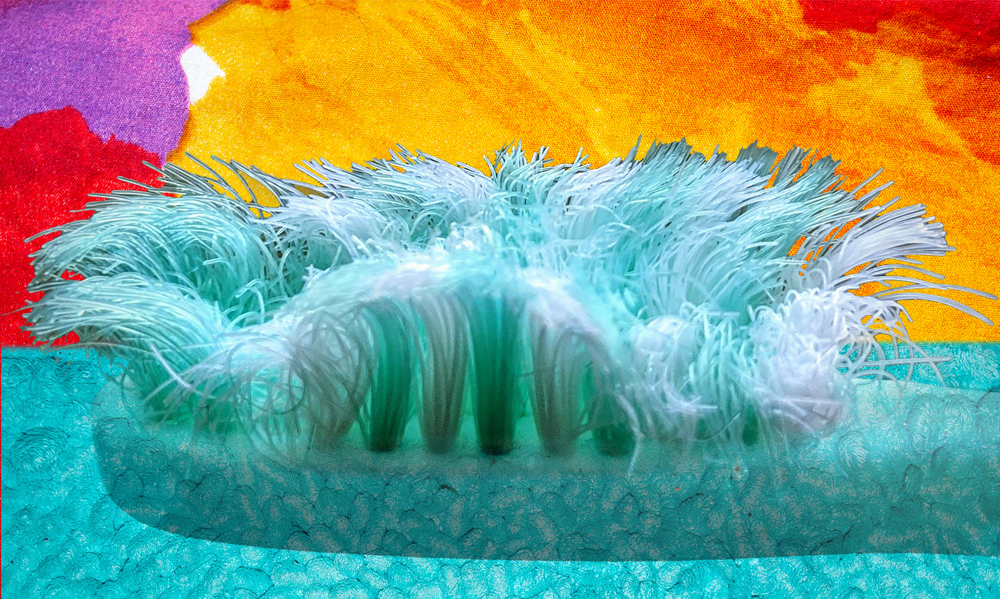

The western coast of Bathroom is known as Sink and is built upon an unstable tectonic plate that causes frequent earthquakes. The land here is made of glaciers that are almost a mile thick, so you usually can’t feel the earthquakes from the surface. They do however cause massive tsunamis up to 2000 feet tall. The tsunamis break against the sides of the glaciers, and don’t cause any damage inland, so you can view them from a watch stand.